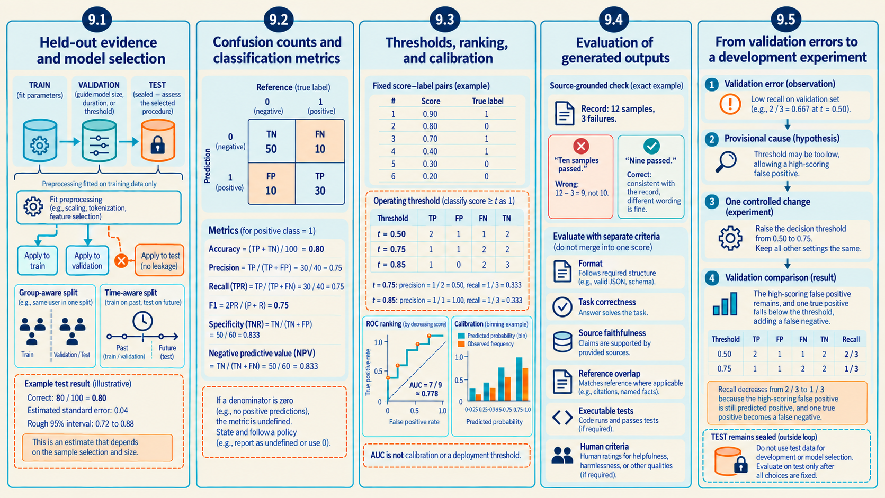
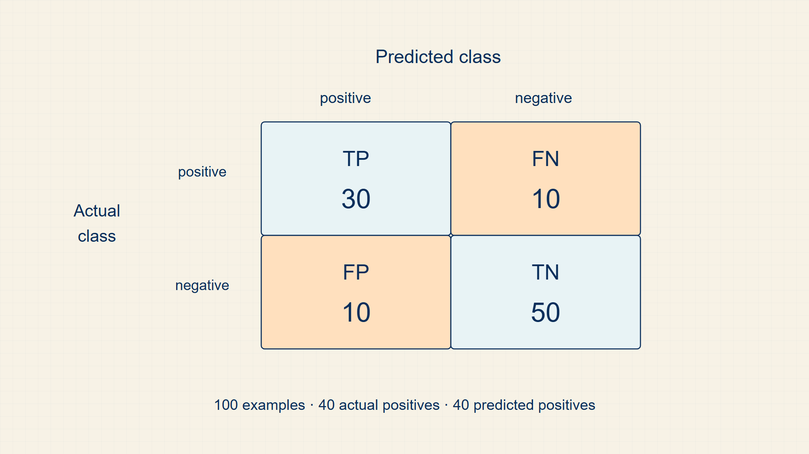

9 Validation & Testing: Catching Overfitting and Measuring Generalization
A low loss on records used to fit a model leaves its performance on new inputs uncertain. Separate evaluation examples provide evidence about that uncertainty. Their selection, the prediction rule, and the metric determine what the result can establish.

9.1 Held-out evidence and model selection
Repeatedly improving a model against the same examples can adapt it to details that will not recur. The training, validation, and test roles separate parameter fitting from development choices and final measurement. Validation guides choices such as model size, training duration, or a decision threshold. The test set assesses the selected model after those choices are fixed.
Overfitting occurs when fitting adapts to details of the training sample at the expense of performance on the relevant unseen data. Underfitting means the fitted rule fails to capture useful structure even in the training task. High training and validation losses can suggest underfitting, but they can also reflect incomplete optimization or noisy targets.
When training loss falls while validation loss rises, the growing gap is evidence consistent with overfitting. It does not by itself identify the cause. A fixed linear boundary missing a curved target pattern suggests a representation limit. A flexible model changing substantially across different training samples suggests sensitivity to the sample. The learning curves alone do not measure these two effects separately.
In numerical prediction, consider the same fitting procedure applied to possible training samples from one population. At a fixed input, its average prediction can differ from the population’s mean target value. That difference is statistical bias. Variance measures how predictions for that input vary across the training samples. These describe the learning procedure’s behavior, while an affine layer’s bias is an adjustable parameter.1 Possible experiments include more data, a penalty on parameter size developed next in §10.5, earlier stopping, or a different model. None is a guaranteed cure for a particular curve shape. Compare these choices using the same validation criterion and training budget.
Data leakage occurs when information reserved for evaluation enters fitting or development in a way that invalidates the intended test. Fitting a vocabulary on the final test text can expose information unavailable under a training-only protocol. Duplicate passages or benchmark answers in training data can also inflate a score.
A split must match the intended use. Records from the same person or document may need to stay in one group to test transfer to unseen groups. Predicting future observations calls for a time-respecting split. A random row split can otherwise share closely related records across fitting and evaluation. The grouping or time rule is part of the experiment.
When one development split is too small to judge a lightweight baseline, k-fold cross-validation uses each portion of the development data once as a validation set.2 For 100 independent development records divided into five folds of 20, fit the baseline separately on each 80-record training fold and evaluate that fitted baseline on the remaining 20 records. Average the five validation results before choosing a setting, then fit the chosen setting on the available development records and use the untouched test set once. Any vocabulary or scaling fitted from data must be refitted inside each training fold. If records share a person or document, assign whole groups to folds. For future prediction, use time-ordered splits. Running five fits instead of one increases compute and may be unsuitable for a full LLM training run even when useful for smaller baselines.
Repeated model selection can adapt to the validation set too. Reserving a final test set protects that last measurement only while its results remain outside development decisions. §10.8 later compares ways to search training settings using validation evidence.
The training diagram connects a forward loss to the gradients consumed by an optimizer.

The target is a required loss input, and the optimizer performs the parameter change. Evaluation can calculate the same loss while keeping those parameters fixed. It does not perform the update depicted in the training flow.
Held-out mean loss applies §1.3’s empirical average to evaluation examples. The model parameters remain fixed while the chosen loss compares each prediction with its reference answer. The arithmetic matches a training average, but these records measure the fitted model’s performance.
The held-out mean measures performance on the selected records. Its use as an estimate for future inputs depends on how those records were selected and how closely they represent that use. A small or unrepresentative sample can give a misleading estimate even without leakage. A suitable metric must also expose the errors that matter for the task.
The number of held-out cases matters even when they are representative. Suppose a fixed classifier gets 80 of 100 independently sampled test cases right. Its measured accuracy is 0.80. For this binary success measure, the estimated standard error is \(\sqrt{0.8(1-0.8)/100}=0.04\): an estimate of how much the measured fraction would vary across new samples of 100 cases from the same population. A rough 95% confidence interval using the normal approximation is \(0.80\pm1.96(0.04)\), or about 0.72 to 0.88. Under its assumptions, this interval procedure covers the population accuracy in about 95% of repeated samples. It does not account for related cases, changes in the population, or decisions made after examining the test result. When the sample is small or the measured accuracy is near zero or one, this normal approximation can be unreliable. Choose an interval method suited to the observed counts. Reporting 80/100 alongside the interval makes the size of the evidence visible.
9.2 Confusion counts and classification metrics
Overall accuracy can hide a model that misses most examples of a rare class. For instance, always choosing the majority class gives 95% accuracy when 95 of 100 examples belong to it. The rare class then has no successful predictions.
For binary classification, declare label 1 to be the positive class and label 0 the negative class. A confusion matrix counts predictions against those reference labels. Its axes and class order must be specified before interpreting the cells.
A true positive, abbreviated TP, has reference 1 and prediction 1. A false positive, FP, has reference 0 and prediction 1. A false negative, FN, has reference 1 and prediction 0. A true negative, TN, has reference 0 and prediction 0.
The grid supplies labeled axes and colored cells without interior counts. As a fill-in check, each cell’s two axis labels determine which of TP, FP, FN, and TN belongs there.

The answer follows the reference label first. A positive reference predicted negative is FN, while a negative reference predicted positive is FP. Changing the row-column convention moves those cells but does not change their definitions.
Accuracy divides the number of correct decisions by the total number of evaluated cases:
\[ \mathrm{accuracy}=\frac{TP+TN}{TP+TN+FP+FN} \tag{9.1}\]
The denominator must be nonzero. It combines both classes, which explains why a majority class can dominate this measure. Precision instead asks which predicted positives are truly positive:
\[ \mathrm{precision}=\frac{TP}{TP+FP} \tag{9.2}\]
Its denominator \(TP+FP\) counts predicted positives. Recall asks which actual positives were found:
\[ \mathrm{recall}=\frac{TP}{TP+FN} \tag{9.3}\]
Its denominator \(TP+FN\) counts actual positives. The F1 score combines precision \(P\) and recall \(R\) through their harmonic mean:
\[ F_1=\frac{2PR}{P+R} \tag{9.4}\]
When these component quantities are defined, the same expression is \(2TP/(2TP+FP+FN)\). A high value needs both precision and recall to be high. It ignores true negatives, so it cannot alone describe every error cost.
The negative class has corresponding measures. Specificity is \(TN/(TN+FP)\), the fraction of actual negatives correctly rejected. Negative predictive value, or NPV, is \(TN/(TN+FN)\), the fraction of negative predictions that are correct. Their denominators count different populations, just as precision and recall do.
If a denominator is zero, the corresponding fraction is undefined. No predicted positives makes precision undefined, and no actual positives makes recall undefined. Specificity needs actual negatives, while NPV needs negative predictions. A report can mark undefined values as unavailable or adopt a documented software convention. Substituting zero by convention must not be described as a measured fraction.
The count form of F1 equals zero when \(TP=0\) but \(FP+FN>0\). If all three counts are zero, that form is undefined too. Software may supply a configured zero-division value. Any average across classes must specify how such results are handled.
Example: Six metrics from the same counts
Take \(TP=30\), \(TN=50\), \(FP=10\), and \(FN=10\) on 100 test examples. With reference classes as rows and predicted classes as columns, in order [0,1], the matrix is [[50,10],[10,30]].
Accuracy is \((30+50)/100=0.80\). Precision is \(30/40=0.75\), recall is \(30/40=0.75\), and F1 is \(60/(60+10+10)=0.75\). Specificity is \(50/60\approx0.833333\), and NPV is also \(50/60\approx0.833333\).
The denominators show why the two 0.75 values agree: both predicted positives and actual positives number 40. That equality is particular to these counts. The same accuracy could accompany a different balance of false positives and false negatives.
Conclusion: Six measures describe different subsets of the same 100 decisions. Choosing among them requires knowing which mistakes the task makes costly.
A separate count example has \(TP=20\), \(FP=180\), \(FN=10\), and \(TN=1820\). Precision is \(20/200=10\%\), recall is \(20/30\approx67\%\), specificity is \(1820/2000=91\%\), and NPV is \(1820/1830\approx99.5\%\). The negative predictions are usually correct, yet only one in ten positive predictions is correct. These different results follow from their different denominators.
For multiclass tasks, a macro average averages per-class metrics with equal class weight. A micro average first pools the relevant counts across classes, then calculates the metric. Here a class’s support means its number of reference examples. A support-weighted average uses those counts as class weights. This differs from sampling support in §7.2, which is a set of possible outcomes. The averaging choice must accompany a reported multiclass score.
For the next comparisons, keep six label-score pairs in this order: (1,0.9), (1,0.4), (0,0.8), (0,0.2), (1,0.7), and (0,0.1). A score is the predicted positive-class probability. At threshold 0.5, their decisions give \(TP=2\), \(FP=1\), \(FN=1\), and \(TN=2\). These fixed rows let the next section compare thresholds, ranking, and calibration on the same data.
9.3 Thresholds, ranking, and calibration
A false positive and a false negative can have different costs. The threshold should reflect that decision, using validation examples representative of the intended use. With calibrated probabilities and constant error costs, the expected-cost rule can be derived directly.
Let \(C_{FP}\) be the cost of predicting positive on an actual negative and \(C_{FN}\) the converse cost. Assume correct decisions cost zero and the two error costs are positive. For predicted probability \(p\), the expected costs of positive and negative decisions are \(C_{FP}(1-p)\) and \(C_{FN}p\). Choosing positive when the first is no larger gives threshold \(p\ge C_{FP}/(C_{FP}+C_{FN})\). Equal costs give 0.5. Other constraints may require a different operating rule.
On a fixed labeled dataset, raising the threshold cannot increase the number of positive predictions. True-positive and false-positive counts can only stay unchanged or fall. Recall can fall, but precision need not rise because both its numerator and denominator change.
For the six scores in §9.2, threshold 0.5 gives \(TP=2\), \(FP=1\), and precision \(2/3\). Raising it to 0.75 removes the positive case scored 0.7. The retained scores 0.9 and 0.8 contain one positive and one negative, so precision falls to \(1/2\). Raising it again to 0.85 leaves only the positive case scored 0.9, giving precision 1 and recall \(1/3\).
The true-positive rate (TPR) is recall. The false-positive rate (FPR) is the fraction of actual negatives predicted positive:
\[ \mathrm{TPR}=\frac{TP}{TP+FN},\quad\mathrm{FPR}=\frac{FP}{FP+TN} \tag{9.5}\]
Their denominators count actual positives and actual negatives, respectively. Those populations remain fixed during a threshold sweep. If either class is absent, its rate is undefined. A receiver operating characteristic (ROC) curve plots TPR against FPR as the threshold changes.
For the separate counts \(TP=40\), \(FN=10\), \(FP=20\), and \(TN=30\), TPR is \(40/50=0.8\) and FPR is \(20/50=0.4\). The ROC point is therefore \((0.4,0.8)\). It describes one operating point, not the whole curve.
The area under the ROC curve (AUC) summarizes the ranking across thresholds. With finitely many scores, the measured curve consists of line segments. Each segment contributes its horizontal width times the average of its endpoint heights.
Example: Discrete ROC area
Use the separate illustrative ROC points \((0,0)\), \((0.5,0.8)\), and \((1,1)\). The first strip has area \(0.5(0+0.8)/2=0.20\). The second has area \(0.5(0.8+1)/2=0.45\). Their sum is 0.65.
Conclusion: AUC combines operating points through area. It does not choose a deployment threshold or establish that the probability values are calibrated.
The integral below is optional compact notation for that area:
\[ \mathrm{AUC}=\int_{0}^{1}\mathrm{TPR}(\mathrm{FPR})\,d\mathrm{FPR} \tag{9.6}\]
It accumulates the TPR heights across the FPR axis from 0 to 1. The discrete trapezoid calculation above is enough to evaluate the example. For binary scores, AUC also measures how often a positive case ranks above a negative, counting ties by halves. In §9.2, seven of the nine positive-negative pairs rank correctly, giving \(7/9\).3
When positives are rare, the fraction of positive predictions that are correct can matter more than the false-positive rate alone. A precision-recall curve plots precision against recall while the threshold changes. On the six scores from §9.2, threshold 0.85 keeps only the positive case scored 0.9, giving recall \(1/3\) and precision 1. Threshold 0.75 also keeps the negative case scored 0.8, giving recall \(1/3\) and precision \(1/2\). At 0.35, all three positives and one negative are selected, giving recall 1 and precision \(3/4\). These points show the trade-off for this dataset. Threshold selection still needs a task-specific criterion, and a population curve needs representative evaluation data. The baseline precision from predicting every case positive is the positive fraction, here \(3/6\).
Calibration instead compares predicted positive probabilities with observed positive frequencies. It does not compare a probability with the fraction of correct thresholded decisions. A calibration bin groups similar predicted probabilities, then compares their mean with the bin’s positive-label fraction.4
For groups assigned probabilities 0.7 and 0.8, calibration concerns positive-label frequencies near 70% and 80%, respectively, allowing for sampling variation.
For the three scores at least 0.5 in §9.2, the mean is \((0.9+0.8+0.7)/3=0.8\). Two of their three labels are positive, giving observed fraction \(2/3\). The lower bin has mean \((0.4+0.2+0.1)/3\approx0.233333\) and positive fraction \(1/3\). These tiny bins show the calculation but cannot establish a dependable calibration pattern.
Checking calibration differs from fitting a correction to the probabilities. Fitting that correction for an already trained classifier needs separate calibration data. The final test remains reserved. A model may rank cases well while reporting probabilities that are systematically too high, so AUC cannot replace this check.
The runnable scikit-learn example calculates these measures for the six label-score pairs in §9.2. Threshold 0.5 produces decisions, while roc_auc_score receives the unthresholded scores.
Code example: Confusion-matrix metrics and ROC AUC from fixed predictions
from sklearn.metrics import (
confusion_matrix,
precision_recall_fscore_support,
roc_auc_score,
)
y_true = [1, 1, 0, 0, 1, 0]
scores = [0.9, 0.4, 0.8, 0.2, 0.7, 0.1]
y_pred = [int(score >= 0.5) for score in scores]
print(confusion_matrix(y_true, y_pred))
print(precision_recall_fscore_support(y_true, y_pred, average="binary"))
print(roc_auc_score(y_true, scores))confusion_matrix returns [[2,1],[1,2]] with reference rows and prediction columns in class order [0,1]. precision_recall_fscore_support returns precision, recall, F1, and support in that order. Each metric is \(2/3\). With binary aggregation, the returned support is None. The ROC area is \(7/9\approx0.777778\).
This case has nonzero denominators. For other inputs, a deliberate zero_division setting and an accompanying reporting policy are needed. The fixed six rows check the arithmetic and show which decisions change with the threshold. They do not provide a stable performance estimate.
These measures separate operating-point errors, ranking, and probability scale. Generated text adds another difficulty: several different outputs may satisfy the same task.
9.4 Evaluation of generated outputs
A correct answer can use words different from a reference, while a fluent answer can contradict the supplied facts. Next-token likelihood measures probability assigned to recorded text. It cannot by itself judge every property required of a generated answer.
A logistic classifier directly scores categories. An n-gram model defines probabilities over continuations. The transformer decoder introduced later in §18.1 also assigns continuation probabilities. It uses attention to combine information from permitted earlier positions, a calculation developed later in §16.1. A prompt can use that decoder for classification, extraction, translation, or open-ended writing. These tasks need different scoring rules despite sharing next-token computation. Conditional generation means generating an output given an input such as a prompt, document, or image.
For classification through a prompt, the evaluation must map output text to allowed labels and record invalid formats. Extraction can compare returned fields with source spans. Exact match scores whether an output equals an accepted reference after a declared normalization rule. It suits a uniquely specified answer, but Nine passed. and Nine samples passed. differ as strings despite giving the same count. For translation, BLEU compares short token sequences with reference translations and applies a length penalty.5 For summarization, ROUGE offers overlap measures such as n-gram overlap and longest common subsequence.6 Both depend on reference wording, so a meaning check remains necessary when several phrasings are valid. Open-ended writing may require a human rubric for relevance, coherence, and requested constraints. For generated code with executable tests, pass@k measures the fraction of tasks for which at least one of \(k\) sampled solutions passes those tests under a stated sampling protocol.7 Passing the tests establishes behavior on those tests, which may not cover every required case.
Source faithfulness means agreement with the supplied evidence. It is distinct from agreement with external facts when that evidence is incomplete or wrong. A hallucination is generated content presented as established fact without support in the available evidence. An unsupported claim lacks evidence, while a contradictory claim conflicts with it. Either can be a hallucination. A wrong format is a separate failure unless it also changes or invents a claim.
Example: A source-based answer check
The supplied record says, Batch A contains 12 samples. Three failed the check. The input question is How many samples passed? Answer in one sentence. The reference answer is nine. Consider generated output Ten samples passed the check.
The output meets the one-sentence format and answers the requested kind of question. It fails numerical correctness because \(12-3=9\). It also contradicts the supplied evidence, so the stated count is a hallucination under the definition above. An output such as Nine passed. would satisfy those same criteria despite differing from a longer reference sentence.
Conclusion: Separate format, task correctness, and source faithfulness scores reveal different outcomes on the same generated text. Fluency cannot compensate for the incorrect count.
Human judgments also need stated criteria, examples of their application, and a record of disagreements. The input, reference, generated output, and criterion-level judgments should remain together.
A benchmark packages a dataset with an input format, target rule, and scoring protocol. Prompt templates and decoding settings can be part of that protocol. The answer format and scoring criterion differ across these examples:
- MMLU, or Massive Multitask Language Understanding, uses multiple-choice questions across academic subjects. Accuracy counts the selected reference options, rather than grading unrestricted essays.8
- TruthfulQA asks questions designed to elicit common misconceptions. Its generated-answer evaluation distinguishes truthfulness from informativeness, so avoiding a falsehood alone need not provide a useful answer.9
- HellaSwag presents event descriptions and candidate continuations. Selecting a plausible continuation tests that bounded choice, rather than every form of commonsense reasoning.10
- The original Humanity’s Last Exam protocol uses expert academic questions with multiple-choice or short answers, including some image inputs. Its grading depends on those question and answer formats.11
- Abstract-grid tasks supply example input-output grids and ask for the missing output grid for another input. ARC-AGI is a benchmark family using this format. Exact grid reconstruction differs from judging the fluency of an explanation.12
These scores measure outcomes under different tasks and protocols. They cannot be substituted for one another as a general quality score.
Training-data overlap can make a benchmark less informative about unseen problems. Dataset mismatch can also limit its relevance to deployment. A report should identify these limits and preserve the tested model version, prompts, and decoding settings. A lower held-out perplexity, as defined in §8.5, supports a likelihood comparison under the stated tokenization and loss policy, not a universal quality claim.
Task-specific evidence can now guide a development change. The choice should address an observed error pattern without turning the final test into another tuning set.
9.5 From validation errors to a development experiment
An aggregate metric does not identify which input property caused a mistake. Reviewing the corresponding validation examples can suggest a change to test, while leaving that explanation provisional.
Treat the six rows from §9.2 as validation records for this diagnostic example. At threshold 0.5, row 2 is the false negative and row 3 the false positive. The full count definitions and metric calculations remain in §9.2.
The supplied arrays contain no text, so their scores cannot reveal a linguistic cause. As a separate illustrative record, a negative review reading not good might receive a positive prediction. If a count representation emphasizes good without representing its relationship to not, a negation feature is a plausible experiment. The observation does not prove that this mechanism caused either error in the six-row array.
Comparing unigram features with features that include not good tests that explanation on a fixed development split. The report should compare the same metric and inspect whether other mistakes increase. A threshold experiment addresses a different issue: changing which scores trigger the positive decision without changing the learned representation.
In the supplied six-row case, raising the threshold from 0.5 to 0.75 leaves row 3 falsely positive and adds row 5 as a false negative. It therefore fails to fix the high-scoring negative and reduces recall from \(2/3\) to \(1/3\). The count trace identifies the consequence of changing only the decision rule.
These six examples can motivate a controlled comparison but cannot settle expected performance. More representative validation evidence is needed before selecting a change. Final test results are reported after that selection, with sample size and remaining uncertainty visible.
An evaluation procedure identifies which errors matter on separate inputs. Improving them still requires choosing how training gradients change parameters. The update methods in Chapter 10 use the slopes established in §5.4 and the losses developed here.
Chapter checkpoint
Can raising a threshold lower precision? What does an empty predicted-positive set mean for precision? Does AUC measure calibration?
Answer: Raising the threshold from 0.5 to 0.75 removes one true positive and no false positives. Precision falls from \(2/3\) to \(1/2\). An empty predicted-positive set gives an undefined fraction, requiring a declared reporting policy. AUC measures ranking across thresholds. Calibration separately compares predicted probabilities with observed frequencies.
If validation error inspection suggests a new feature, when should the final test be used?
Answer: Compare the proposed feature using development data and choose the final procedure first. Evaluate on the reserved test afterward. Repeatedly changing the procedure in response to its test scores would make that set part of development.
Hastie, T., Tibshirani, R., & Friedman, J. (2009). The elements of statistical learning: Data mining, inference, and prediction. Second edition, Springer, §7.3. The definition here concerns numerical prediction at a fixed input across possible training samples.↩︎
Scikit-learn developers. (2026). Cross-validation: evaluating estimator performance. Scikit-learn 1.9.1 documentation, K-fold, group, time-series, and preprocessing guidance.↩︎
Scikit-learn developers. (2026). roc_auc_score. Scikit-learn 1.9.1 documentation. The binary interface accepts positive-class probabilities or unthresholded decision scores. Thresholded labels discard ranking information.↩︎
Scikit-learn developers. (2026). Probability calibration. Scikit-learn 1.9.1 documentation, §1.16.1. Calibration curves compare each bin’s mean prediction with its positive-label fraction.↩︎
Papineni, K., Roukos, S., Ward, T., & Zhu, W.-J. (2002). BLEU: a Method for Automatic Evaluation of Machine Translation. Proceedings of the 40th Annual Meeting of the Association for Computational Linguistics, 311–318.↩︎
Lin, C.-Y. (2004). ROUGE: A Package for Automatic Evaluation of Summaries. Text Summarization Branches Out, 74–81.↩︎
Chen, M., et al. (2021). Evaluating Large Language Models Trained on Code. arXiv:2107.03374.↩︎
Hendrycks, D., Burns, C., Basart, S., Zou, A., Mazeika, M., Song, D., & Steinhardt, J. (2021). Measuring Massive Multitask Language Understanding. International Conference on Learning Representations.↩︎
Lin, S., Hilton, J., & Evans, O. (2022). TruthfulQA: Measuring How Models Mimic Human Falsehoods. Proceedings of the 60th Annual Meeting of the Association for Computational Linguistics (Volume 1: Long Papers), 3214-3252.↩︎
Zellers, R., Holtzman, A., Bisk, Y., Farhadi, A., & Choi, Y. (2019). HellaSwag: Can a Machine Really Finish Your Sentence? Proceedings of the 57th Annual Meeting of the Association for Computational Linguistics, 4791-4800.↩︎
Phan, L., et al. (2025). Humanity’s Last Exam. arXiv:2501.14249, version 1. This identifies the original protocol, not a current ranking or a later dataset revision.↩︎
ARC Prize. (n.d.). ARC-AGI-1 & ARC-AGI-2 Guide. Retrieved September 24, 2026.↩︎